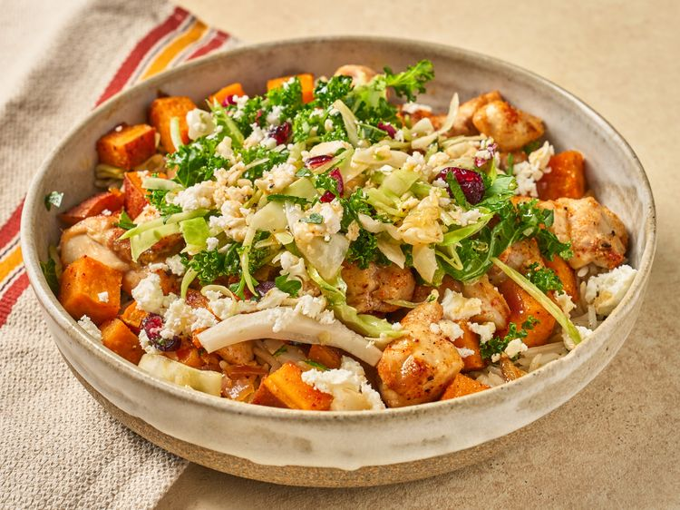

Sheetpan Hot Honey Chicken Bowls

Description
For these sheet pan hot honey chicken bowls, seasoned chicken and sweet potato chunks are drizzled with hot
honey and roasted on a sheet pan.
They are served in a bowl over rice, and topped with lightly dressed kale salad mix and crumbled feta.
Ingredients
- 1 ½ pounds boneless skinless chicken thighs, cut into 1-inch pieces
- 6 tablespoons olive oil, divided
- 1 ½ teaspoons kosher salt, divided, plus more to taste
- 1 teaspoon pepper, divided, plus more to taste
- ¾ teaspoon garlic powder, divided
- ½ teaspoon smoked paprika, divided
- 1 large (or 2 medium) sweet potatoes, cut into 1-inch pieces
- ½ medium red onion, cut into ½-inch pieces
- 2 tablespoons hot honey, plus more for serving if desired
- 2 (8.5 ounce) packets microwaveable ready rice
- 2 tablespoons red wine vinegar
- ¼ teaspoon oregano
- 1 bag crunchy kale salad mix
- ½ cup crumbled feta cheese
Steps
- Preheat the oven to 450 degrees F (235 degrees C). Line a sheet pan with parchment paper.
-
Toss chicken pieces with 1 tablespoon olive oil and season with 3/4 teaspoon salt, 1/4 teaspoon pepper,
1/2 teaspoon garlic powder and 1/4 teaspoon smoked paprika. Spread chicken in an even layer over half
the prepared baking sheet.
-
Toss sweet potatoes, onion, 1/2 teaspoon salt, 1/4 teaspoon pepper, remaining garlic powder and
remaining paprika until well coated. Add mixture to the other half of the baking sheet. Drizzle honey
over chicken and vegetables.
- Bake in the preheated oven until chicken is browned and cooked through, about 20 minutes.
- Meanwhile, prepare rice according to package directions.
-
In a medium bowl whisk together vinegar, remaining olive oil, oregano, and remaining salt and pepper and
set aside.
- Divide rice, chicken, and sweet potato mixture among 4 bowls.
-
Carefully pour and whisk reserved drippings from pan into vinegar mixture until well combined. Taste;
adjust seasoning with salt and pepper.
-
Remove dressing packet from salad mix; save for another use. Add salad mixture to a medium bowl and toss
with 2 tablespoons of sauce mixture. Divide salad among the 4 bowls and top each evenly with feta
cheese. Drizzle remaining sauce over the bowls.
← Home